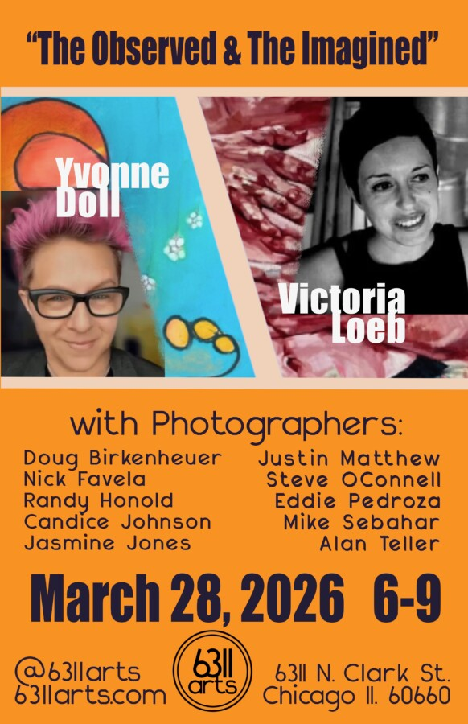

Yvonne Doll and Victoria Loeb: The Observed & The Imagined
Edgewater’s newest art center, 6311arts, will present The Observed & The Imagined, a two-person exhibition featuring artists Yvonne Doll and Victoria Loeb, opening Saturday, March 28, with a reception from 6–9 p.m.
The exhibition explores the dynamic space between the creative acts of observation and imagination through two distinct artistic perspectives. Doll’s vivid palette embraces lyrical abstraction, and she layers color to compose her oversized canvases. The movement in her oil paintings evoke emotions rooted in the human experience. Loeb’s figurative work draws on a rich artistic background in oil, pen, and pastel. Her narrative is shaped by early training in drawing, sculpture, and ballet in Buenos Aires.
Alongside the main exhibition, the gallery’s east and west spaces will feature work by local photographers Doug Birkenheuer, Nick Favela, Randy Honold, Candice Johnson, Jasmine Jones, Justin Matthew, Steve OConnell, Eddie Pedroza, Mike Sebahar, and Alan Teller. The photographic show features established and emerging artists. Their work demonstrates the breadth of creative talent arising from Chicago’s North Side arts community.
Visitors to the opening night reception will have the opportunity to meet the artists, connect with fellow art enthusiasts, and experience a range of contemporary work in an approachable neighborhood setting.